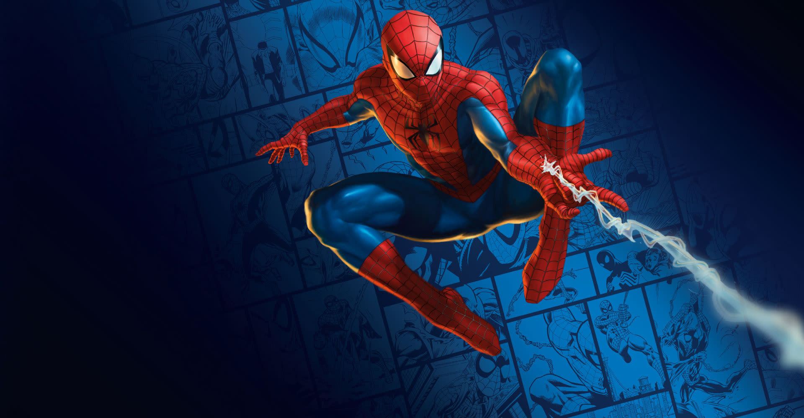

Spider-Man is a superhero appearing in American comic books published by Marvel Comics. Created by writer-editor Stan Lee and artist Steve Ditko, he first appeared in the anthology comic book Amazing Fantasy #15 (August 1962) in the Silver Age of Comic Books. He has been featured in comic books, television shows, films, video games, novels, and plays.
In 1962, with the success of the Fantastic Four, Marvel Comics editor and head writer Stan Lee was casting for a new superhero idea. He said the idea for Spider-Man arose from a surge in teenage demand for comic books and the desire to create a character with whom teens could identify. As with Fantastic Four, Lee saw Spider-Man as an opportunity to include things he felt were missing in comic books. In his autobiography, Lee cites the non-superhuman pulp magazine crime fighter the Spider as a great influence. In interviews, Lee also mentioned that he was inspired after seeing a spider climb up a wall.